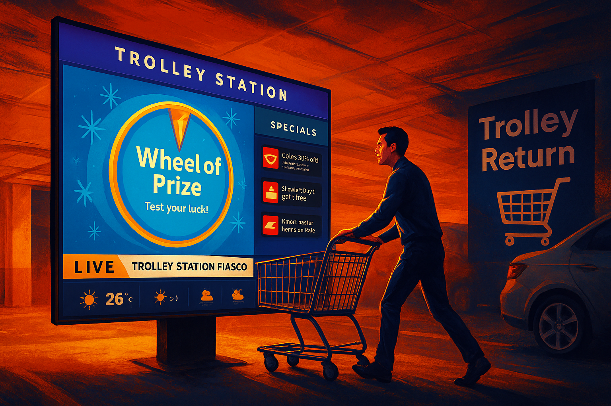
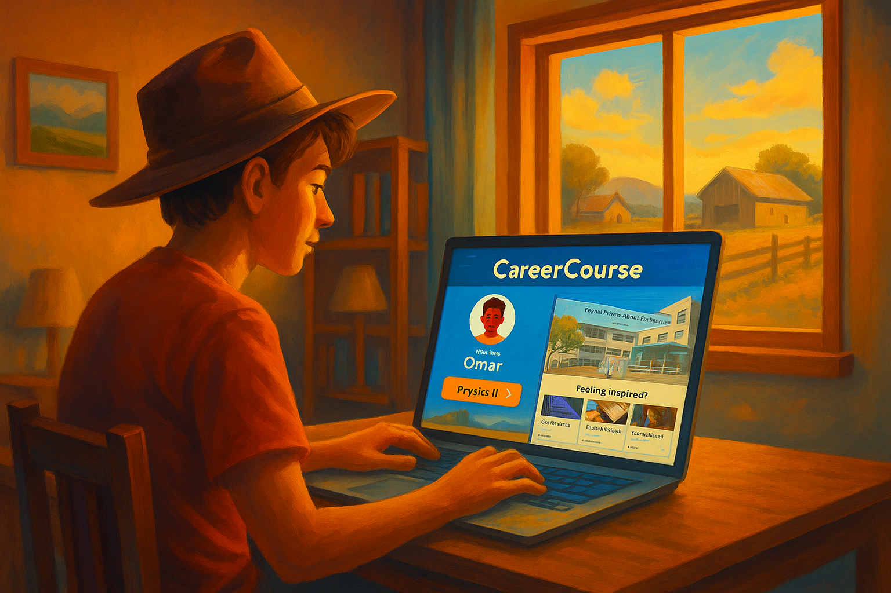

My Projects
Professional work, followed by my university case studies in user research, UI/UX design and interactive experiences.
Shipped at Nitori
E-commerce pages I designed and built for Nitori Taiwan's online store, from seasonal campaigns for Mother's Day, Father's Day and Mid-Autumn to a guide that helps shoppers choose between seven electric sofas. Six are live, so you can try them yourself.
Open the series


University projects
Case studies from my Bachelor of Design Computing at the University of Sydney.

Smart Station — Interactive Trolley Return System
A multi-sensory system to encourage trolley returns through gamification and clear user feedback. This project focused on creating a seamless and rewarding physical-digital interaction.
View Case Study
CareerCourse — Interactive LMS for Remote Students
A digital STEM learning tool designed to engage students in rural and remote areas. The project involved research into gamification principles to create a fun and effective learning environment.
View Case Study
One Shop — AI-Driven Fashion Shopping App
A mobile shopping app with AI integration to help users make confident purchasing decisions. The goal was to enhance the shopping experience by providing personalized recommendations and letting people visualize garments before they buy.
View Case Study